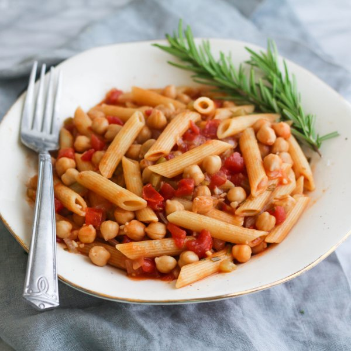

Pasta e Ceci (Pasta with Chickpeas)

Total Time
30 min
Nutrition (Per Serving)
644.9 kcalCalories
26.4 gProtein
107.7 gCarbs
13.7 gFat
Full nutrition table
| Calories | 644.9 kcal |
| Total fat | 13.7 g |
| Saturated fat | 2.1 g |
| Trans fat | 0.1 g |
| Cholesterol | 0 mg |
| Sodium | 371.6 mg |
| Carbohydrates | 107.7 g |
| Fiber | 16.6 g |
| Sugars | 9.8 g |
| Protein | 26.4 g |
| Potassium | 1032.4 mg |
| Calcium | 196.8 mg |
| Iron | 6.4 mg |
| Vitamin A | 1031 IU |
| Vitamin C | 31.2 mg |
| Vitamin D | 0 IU |
Cookware
Ingredients
- 2 stickscelery
- 24 fl ozchicken or vegetable broth
- 2 (14.5 oz) cansdiced tomatoes
- 1 small pkgfresh rosemary
- 2 (15 oz) cansgarbanzo beans (chickpeas)
- 4 clovesgarlic
- 12 ozpenne pasta
- 1 mediumyellow onion
- black pepper
- crushed red pepper
- extra virgin olive oil
- salt
Steps
- Wash and dry the fresh produce.2 sticks celery
1 small pkg fresh rosemary - Small dice the celery and transfer to a medium bowl.
- Preheat a sauté pan over medium heat.
- Peel and small dice the onion; add to the bowl with the celery.1 medium yellow onion
- Add olive oil to the pan and swirl to coat the bottom.2 tbsp extra virgin olive oil
- Add the celery and onion to the pan; cook, stirring frequently, until the vegetables have softened, 4 to 5 minutes.
- Peel and mince the garlic; transfer to a small bowl.4 cloves garlic
- Slide the rosemary leaves off the sprigs; discard the sprigs and mince the leaves. Add to the garlic.
- Add the garlic, rosemary, and crushed red pepper to the pan; stir and cook until fragrant, 1 to 2 minutes.¼ tsp crushed red pepper
- Add the chickpeas and their liquid to the pan, followed by the tomatoes and broth; stir to combine.2 (15 oz) cans garbanzo beans (chickpeas)
2 (14.5 oz) cans diced tomatoes
24 fl oz (3 cups) chicken or vegetable broth - Season the sauce with salt and pepper, then break apart some of the tomatoes and chickpeas with a potato masher or fork. Bring the sauce to a simmer.1 ½ tsp salt
1 ½ tsp black pepper - Add the pasta directly to the sauté pan and mix with the sauce. Cook the pasta in the sauce according to package directions, about 8 to 12 minutes.12 oz (4 ½ cups) penne pasta
- To serve, scoop the pasta into a bowl. Enjoy!